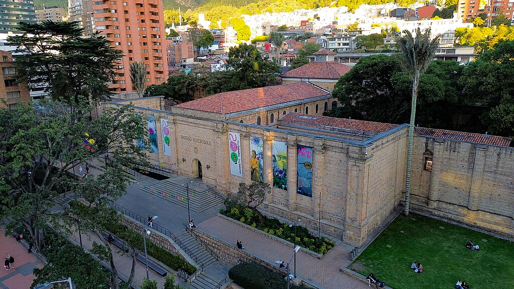
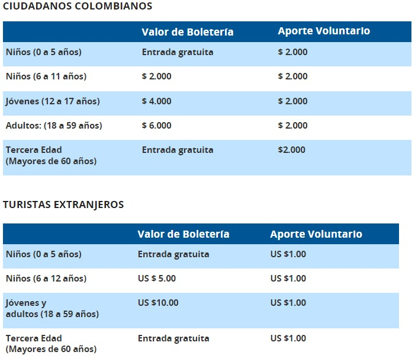
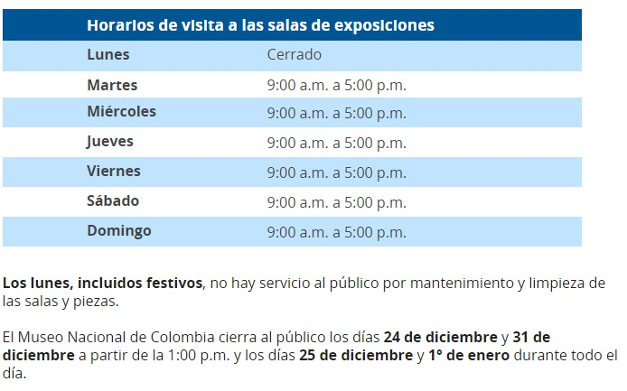
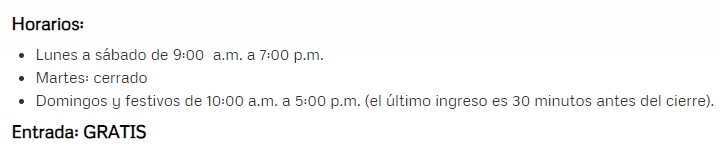
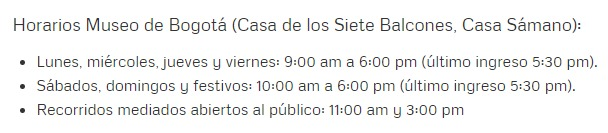
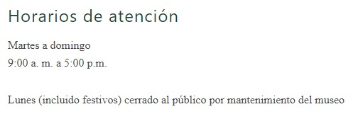
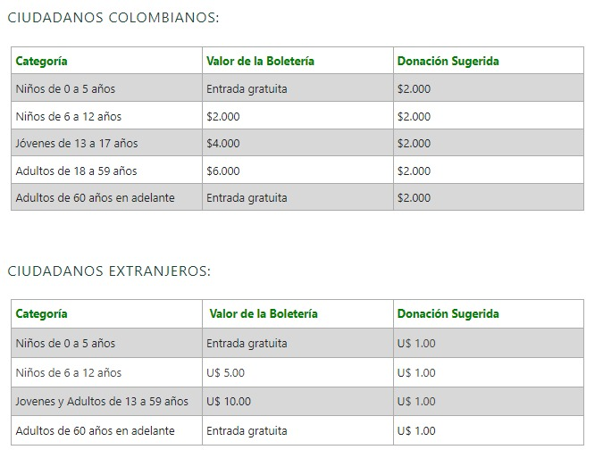
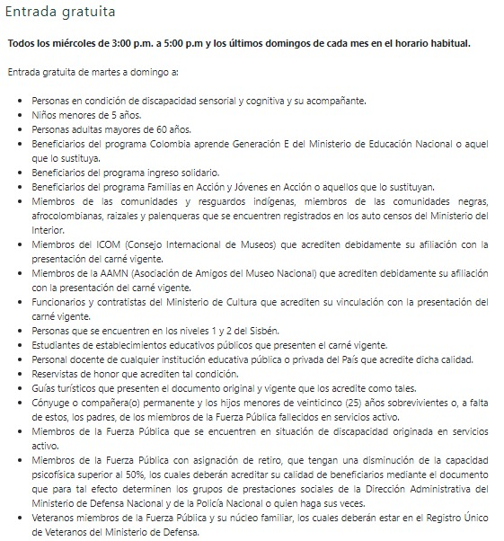

Museo Nacional de Colombia, comúnmente abreviado como Museo Nacional o MNC, es el primer museo fundado en la República de Colombia. Cuenta con su sede en la capital, Bogotá.
Fue fundado por ley del congreso constitucional de la Gran Colombia el 28 de julio de 1823, durante el primer mandato del gobierno encabezado por el presidente Simón Bolívar y el vicepresidente Francisco de Paula Santander. Sin embargo, inició su funcionamiento el 4 de julio del mismo año, cuando se declaró oficialmente creado. Esto lo convierte en la primera institución museal de Colombia y una de las más antiguas de América.
zº

COSTOS

HORARIOS

CONOCE MAS SOBRE EL MUSEO NACIONAL
MUSEO DE BOTERO
El Museo Botero, ubicado en el centro histórico de Bogotá, es un verdadero tesoro cultural. Fundado por el renombrado artista colombiano Fernando Botero en el año 2000, este museo alberga una impresionante colección de su obra característica, reconocida por sus figuras voluptuosas y colores vivos. Desde sus icónicas reinterpretaciones hasta sus piezas más originales, el Museo Botero ofrece a los visitantes una experiencia inigualable en un entorno arquitectónico encantador, que combina la majestuosidad colonial con la modernidad cultural.
Además de admirar las obras de Botero, los visitantes pueden disfrutar de actividades educativas y culturales. Con entrada gratuita y una amplia variedad de programas, el museo invita a explorar y apreciar el arte colombiano en todas sus formas. Ya sea que se trate de una visita rápida o de una inmersión más profunda, el Museo Botero es un destino imprescindible para quienes deseen descubrir la riqueza del arte en Bogotá.
MAPA
Horario y Costos

MUSEO DE BOGOTÀ
El Museo de Bogotá es el museo de ciudad de la capital colombiana. Cuenta con dos sedes, ambas ubicadas en el barrio La Candelaria en el centro histórico de la ciudad. El Museo cuenta con una colección de más de 24.000 objetos, en una amplia variedad de soportes
entre los que se destacan el acervo más importante de fotografía histórica de la ciudad, un legado representativo de planos de Bogotá, así como objetos significativos entre los que cabe mencionar las urnas, el tranvía y la estatua de Gonzalo Jiménez de Quesada, derribada por la comunidad Misak en el marco de las movilizaciones sociales de 2021.
MAPA
HORARIOS Y COSTOS

COSTO: Entrada gratuita
MUSEO DE LA INDEPENDENCIA
El Museo de la Independencia - Casa del Florero, antes llamado Museo del 20 de julio, es un museo de Bogotá, Colombia, que se ubica en una construcción colonial en la esquina noreste de la Plaza de Bolívar.
En él se produjo uno de los acontecimientos históricos más destacados, conocido como el Grito de Independencia, el 20 de julio de 1810.
MAPA
HORARIOS

COSTOS


MUSEO DEL ORO
El Museo del Oro del Banco de la República de Colombia es una institución pública la cual su fin es la adquisición, conservación y exposición de piezas de orfebrería y alfarería de culturas indígenas del periodo precolombino de la actual Colombia
Cuenta con más de 34.000 piezas hechas en oro, 20 000 de objetos líticos, cerámicos, piedras y textiles pertenecientes a las culturas Quimbaya, Calima, Tairona, Zenú, Muisca, Tolima, Tumaco entre otros